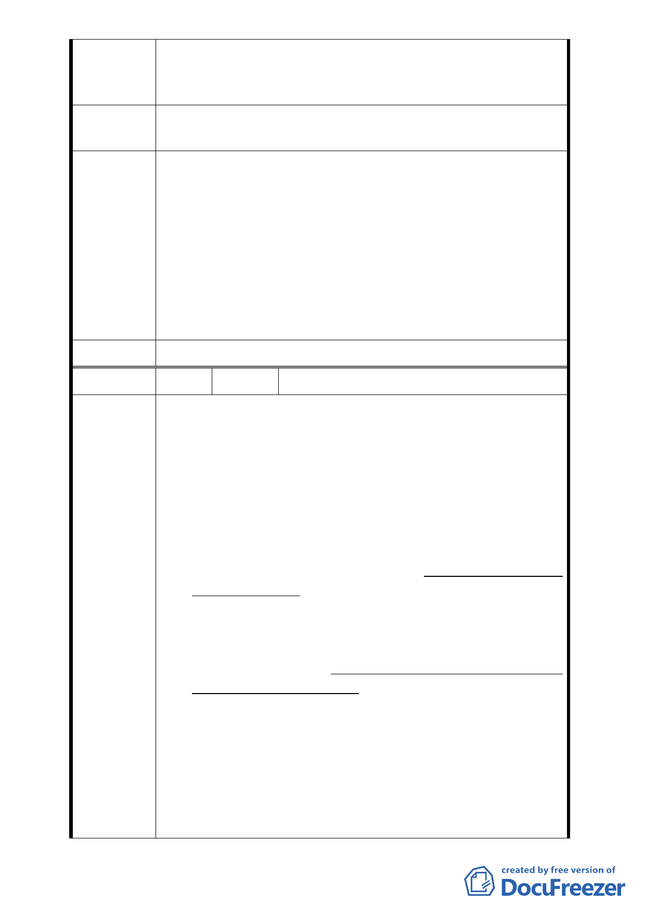

決反對在整體開發建築完成之前，將系爭土地之使用分
區管制逕為異動變更，懇請將說明人等所有土地之使用
分區管制仍維持為「第三種住宅區」，至感德便。
建議辦法
請維持說明人等所有之土地之使用分區管制仍為「第三種住
宅區」，反對變更為「第三種住宅區（特）」。
一、本案並未涉及法定容積、建蔽及土地使用變更，計畫案
名維持原使用分區名稱，不另附加（特）。
二、依市府都市發展局代表說明：「台北好好看申請案並未突
專案小組
審查意見
破都市更新法令之限制，都市更新條例中所規範實施者
應具備之條件與同意比例，也不會因申請台北好好看而
賦予某一公司特別之權利」，本案陳情民眾所關切之更新
同意書效力、權利變換程序及未來實施者之適任與否等
議題，因非涉都市計畫之變更和審議，請陳情民眾另循
都市更新程序辦理。
委員會決議 同專案小組審查意見。
編 號 6 陳情人 王元海等人（自救會）
一、查本自救會其中成員何繡端等十五人，前已於中華民國
(下同)98年7月13日及同年月14日去函臺北市政府都市
發展局，及由該局函轉臺北市都市計畫委員會。合先陳
明。
二、查合康工程顧問股份有限公司 (下稱合康公司) 於97年
10月間，即向臺北市中正區中正段二小段48地號等37筆
土地地主(125位)表示，為配合「促進都市再生 2010 年
台北好好看」計畫，得增加建築容積為由，急需地主出
具同意書辦理，前項同意書雖記載「本人已知悉本事業
計畫內容…」，乃係該公司表示為配合計畫，一再要求
陳情理由
住戶儘快提出，惟迄今已逾一年，該公司仍未交付該事
業計畫之全部資料予各住戶，亦未就計畫內容對住戶詳
盡解說，對住戶要求之獎勵容積及相關問題亦一再漠
視，不願正面回應，迄今更未舉辦公聽會，竟能取得實
施者之地位，令人不解。
三、嗣後，合康公司雖通過都市發展局之「台北市都市設計
及土地使用開發許可審議委員會」之審議，但同意之人
數及私有土地面積亦僅剛好超過法定多數而已，惟住戶
代表大會出席人數日漸減少，仍堅持作成決議(第六次會
議，20位代表僅有5位出席)。 本（98）年4月17日舉行
之第三次住戶大會(非公聽會)，亦僅有48戶(共125戶，
目前同意者據說為85戶)出席，並未過半，竟堅持開會並
- 30 -